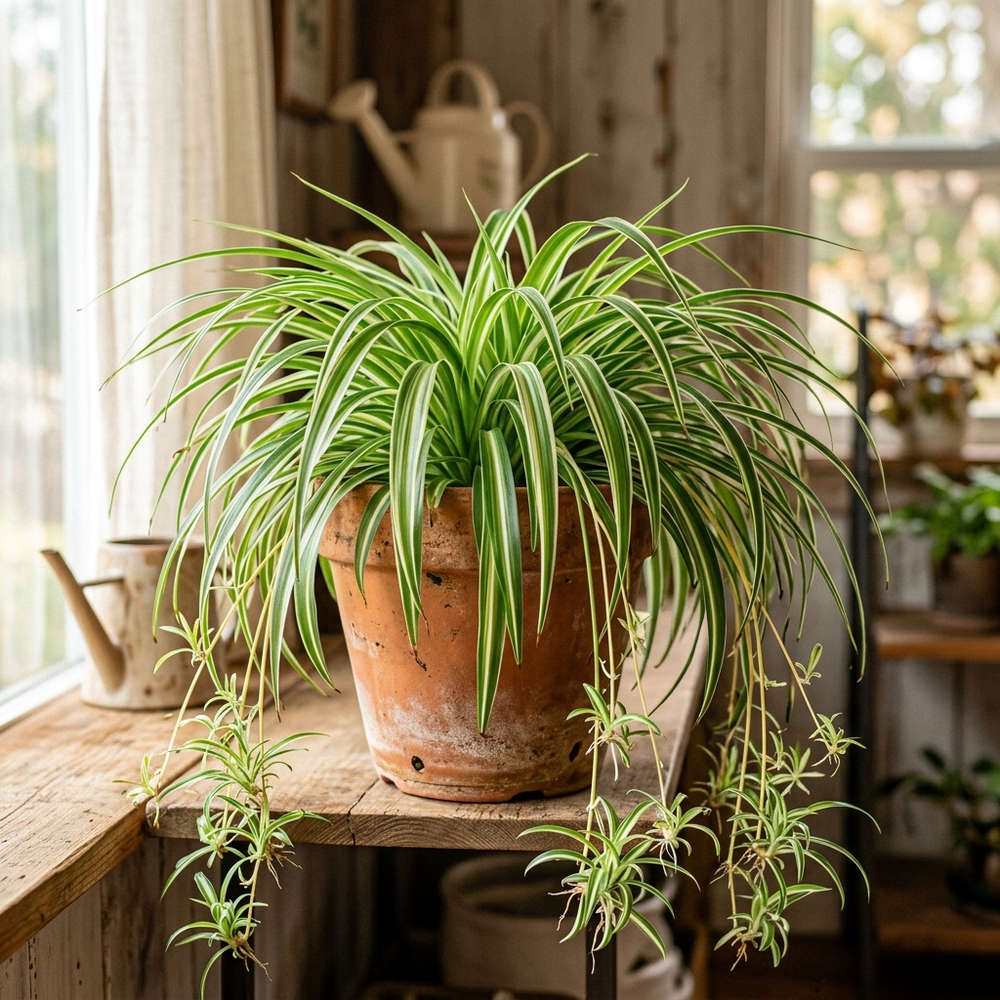

細長い葉の間から、ぴょんと元気に飛び出した茎を見てください。
その先に揺れている小さな赤ちゃんたちは、まるでお祝いの「折り鶴」を吊り下げているように見えませんか？
実は、空気中の有害物質を吸収する能力が非常に高く、NASAの研究でも「エコ・プラント」として高く評価されています。
カメラを使用して視線を追跡します。（映像は外部に送信されません）
マウスモードではマウスカーソルの位置が注視点として扱われます
現在、視線の動きをプレビューしています。画面上の光の輪が視線の動きに追従するか確認してください。